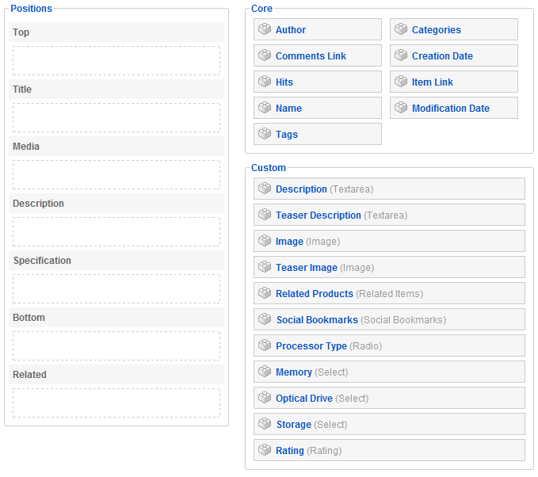

Learn how to assign elements of a type to a layout position in your template. We explain the layouts for the different views and how you show the elements in the frontend of your site.
For creating an item type with the elements, please see {doc: create-new-types text: this tutorial}
You have to choose, which of the elements you want to show on which view in the frontend. For example, you can show all elements of an item on the item view (full layout is used) and if you like you can show only some of them in the in the category view (teaser layout is used).

Here is a description where the different layouts are used.
Each of the above mentioned layouts have different predefined positions. If you want to edit the positions of a specific layout or if you want to create a new layout, follow {doc: create-a-new-template text: this tutorial}.
Click on the specific layout (see first part of this tutorial for a description) to assign the elements to it.
Now on the left hand side you see all available layout positions. If you are editing a predefined item type of the ZOO extension there are already elements assigned. If you've created a new item type the left site is empty.
On the right side you see all elements of the type (see {doc: create-new-types text: this tutorial} on creating a new item type). On the top you see the core elements which are available for every type and underneath it the custom elements which you have assigned to the type.
To assign the elements to the layout positions, simply click on the little brick icon next to the element name and Drag & Drop it to its new position.

Each element you drag to a position will be automatically opened to configure it on this position. Check out our tutorials for each element to see all settings for the elements.
After clicking Save the elements will be shown to the visitors of your site in the frontend of the ZOO extension.
Of course you can assign elements of the item type to multiple layouts to show them in different views.